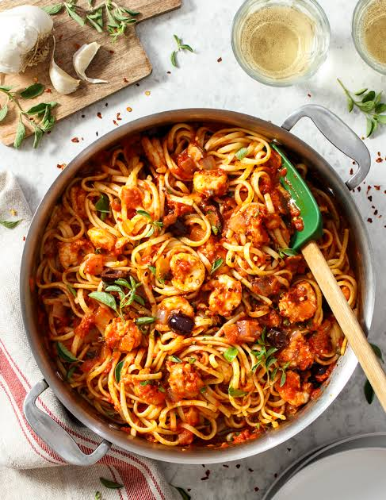

Pasta is a dish made from dough of wheat flour and water, or other grains, formed into sheets or other shapes, and then cooked by boiling or baking.
Pastas are divided into two broad categories: dried (Italian: pasta secca) and fresh (Italian: pasta fresca). Most dried pasta is produced commercially via an extrusion process, although it can be produced at home. Fresh pasta is traditionally produced by hand, sometimes with the aid of simple machines.[4] Fresh pastas available in grocery stores are produced commercially by large-scale machines.